美业邦MOS系统 新手入门
销售人员使用模块：
查看私海
在应用面板点击客户进入到客户管理页面，客户管理页面默认是登录者自己的私海 。
公海获取
在客户模块中可以选择查看公海客户，左滑获取为私有客户数据，并可以拜访跟踪。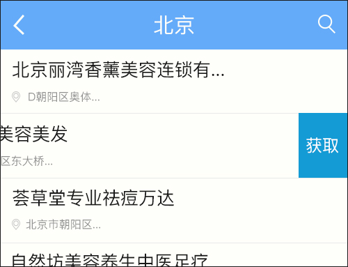
客户查询
无论是公海还是私海，都可以使用查询来查询你想要找的数据。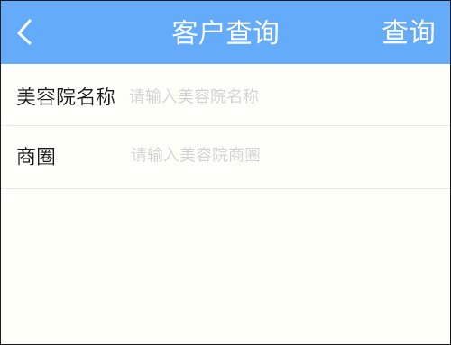
客户拜访
在私海的客户列表里或者客户资料的下方“拜访”里，可以记录拜访时信息，拜访一律为上门拜访。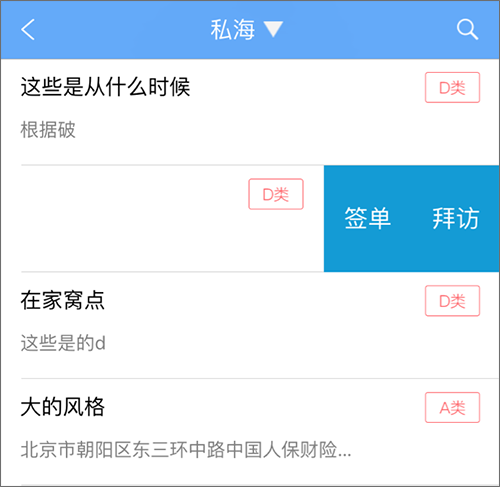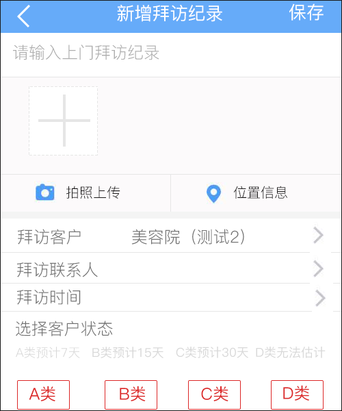
客户资料
客户资料里介绍详细资料，联系人中，添多位有效的联系人，可以直接打电话。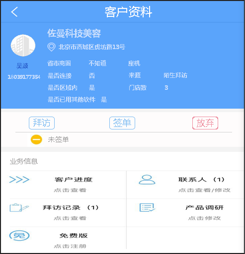
客户签单
在私海的客户列表里左滑或者在客户资料下方“签单”里可以进行对客户拜签单的信息记录提交。提交后在已签单模块中查看签单客户列表。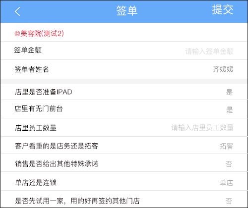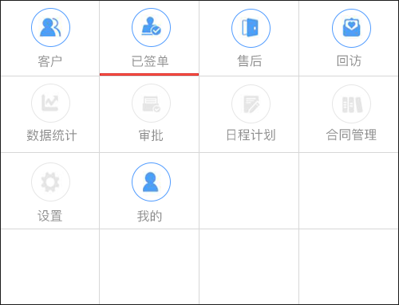
签单提交后，可对客户做出分配和培训工作后，当两项都完成时状态如下：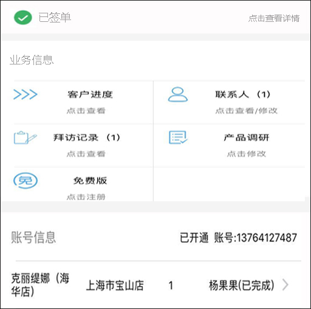
放弃客户
当我们想要放弃一条数据，或者其他原因，我们可以点击放弃。默认添加到公海。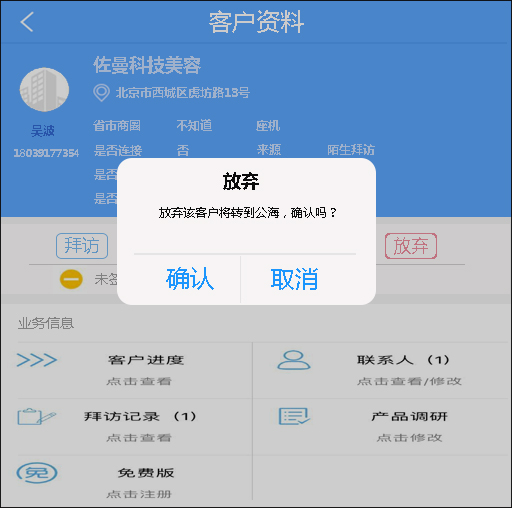
售后培训使用模块：
分配培训
签单得到审批后，我们可以分配人员，并且可以对他进行培训。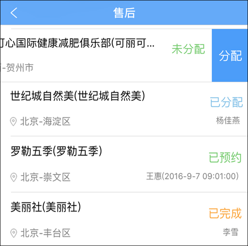
售后回访
当我们签单培训完了之后，左滑可以进行售后的回访。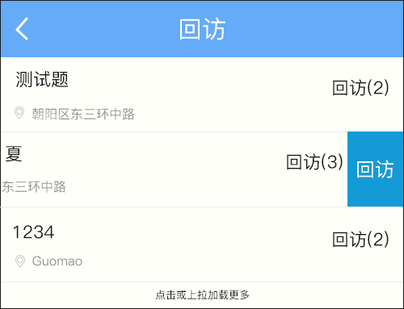